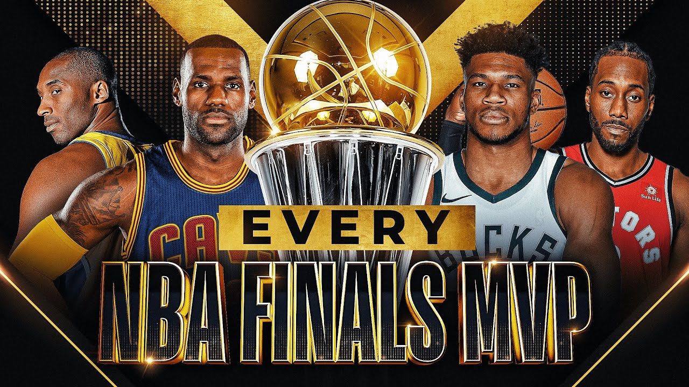

Milwaukee Bucks
Milwaukee Bucks are an American professional basketball team based in Milwaukee. The Bucks compete in the National Basketball Association (NBA) as a member of the league's Eastern Conference Central Division. The team was founded in 1968 as an expansion team, and play at the Fiserv Forum. Former U.S. Senator Herb Kohl was the long-time owner of the team, but on April 16, 2014, a group led by billionaire hedge fund managers Wes Edens and Marc Lasry agreed to purchase a majority interest in the team from Kohl, a sale which was approved by the owners of the NBA and its Board of Governors one month later on May 16.[11] The team is managed by Jon Horst, the team's former director of basketball operations, who took over from John Hammond in May 2017.
The Bucks have won two league championships (1971, 2021), three conference titles (Western: 1971, 1974, Eastern: 2021), and 16 division titles (1971–1974, 1976, 1980–1986, 2001, 2019–2021). They have featured such notable players as Kareem Abdul-Jabbar, Oscar Robertson, Bob Dandridge, Sidney Moncrief, Bob Lanier, Ray Allen, Khris Middleton, Giannis Antetokounmpo, and Jrue Holiday among others. Abdul-Jabbar and Antetokounmpo have been named the NBA's Most Valuable Player while playing for the Bucks, for a total of five MVP awards. They both are also the only players to win Finals MVP for the franchise.
Nationa Basketball Association
